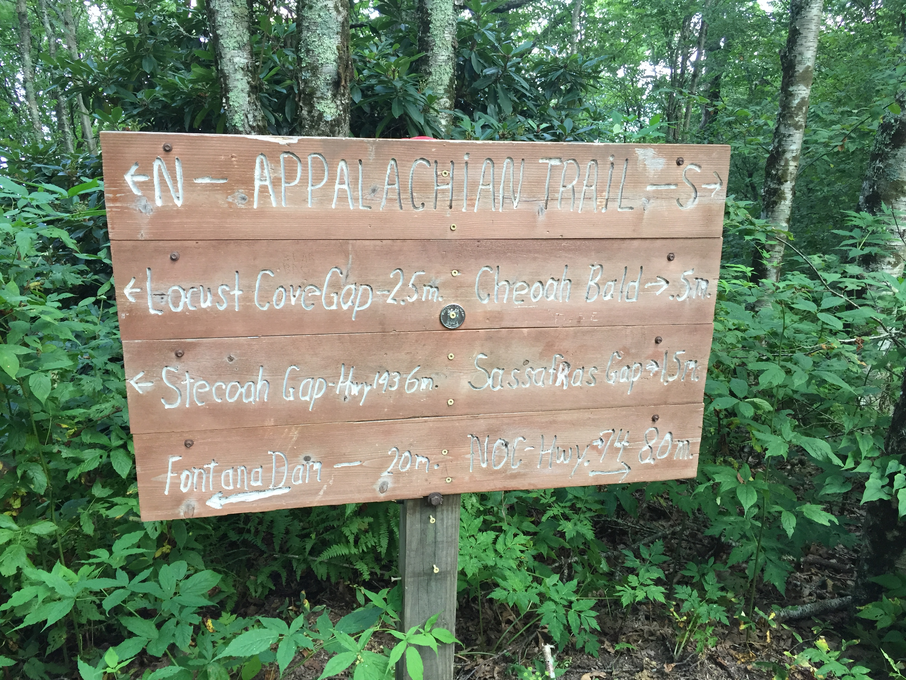
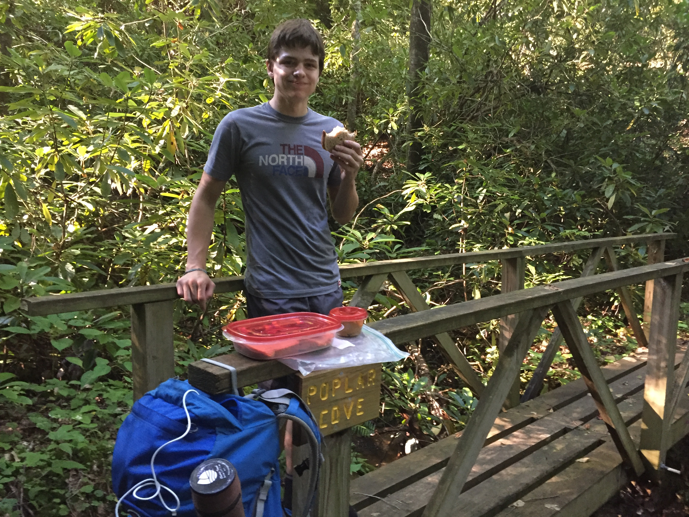
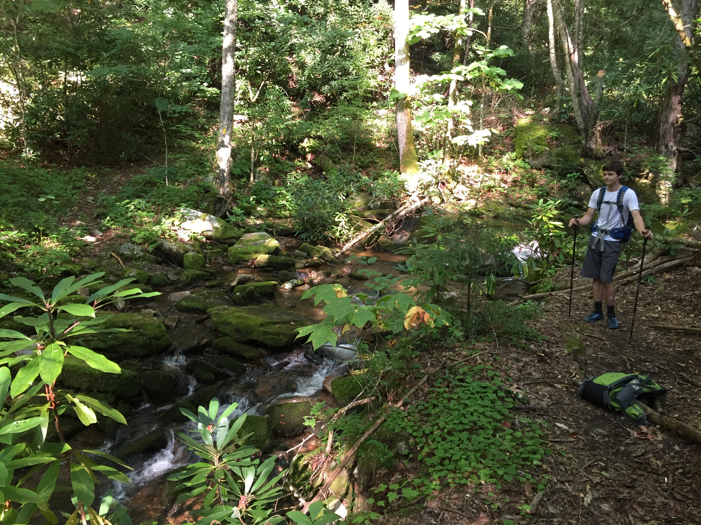
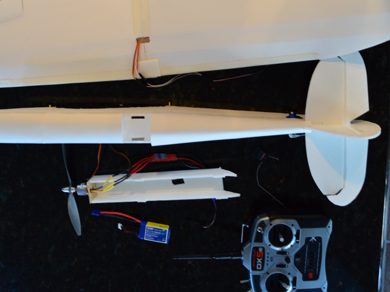
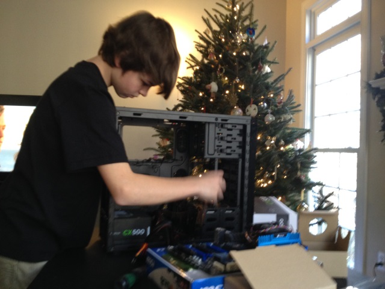
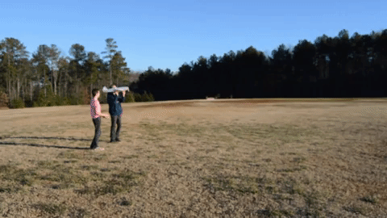
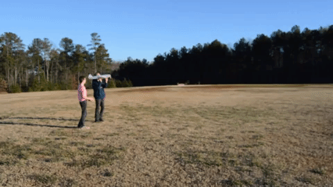

I received a Nixon D3200 camera for my birthday 3 years ago and have had a blast taking photos of the places I have been and the cool things I have seen. Here is a link to an album of some of my favorite photos.
Programming
Java
I used java to create a neural network using processing from scratch. I didn't know anything about neural networks other than the math behind it so I had to learn as I went. My final program worked, but I used evolution instead of back propogation
for the program to improve. If I did It again I would reasearch how to do back propogation and use that instead.
HTML
I have made basic websites for multimedia class but I wanted to learn how to create a website that woud be hosted on the internet. Originaly I used AWS to host but I found it to be a better option to use github pages and a domain from godaddy
(only 2 dollars!) This is my first real website so clearly I have alot to learn, One thing I would like to improve on is resizability and mobile devices but I am sill learning how to do this.
JavaScript
I made this little game (you have to scroll the screen) to learn about cookies and javascript in browser
Hiking
My family has gone hiking for as long as I can remember and it’s become a real love of mine as well. Earlier this summer we visited the Colorado National Monument, Moab Utah (some great hikes in Arches Ntl Park along with two 100’ repelling adventures
and an amazing hike to Maroon Bells in Aspen CO, even crossing the continental divide in the process. A whirlwind and tiring week but lots of fun.
Our latest effort was the north end of the Bartram Trail in western NC (about 30 miles in 3 days), capped off by a 5 mile 3,000 ft elevation climb to the top of Cheoah Bald to watch the Solar Eclipse in totality this past summer. It was nothing
short of amazing

Electronics
For as long as I can remember I’ve been fascinated with electronics. Not just an “aren’t they cool” sort of thing but wanting to know how things really work, and how are they built. I vividly remember the box of spare electronics I had in 4th
grade. Anything I took apart (sometimes forcefully) went into the box. Before I moved the box was bigger than me and held a pile of circuit boards and the like.
My first big effort was to learn how to build my own computer. I didn’t have a lot of cash so I researched how to build the fastest computer for the best value. Hours or learning and instructional you tube videos paid off and I built my own
computer in 7th grade and with a few minor enhancements, I’m still using it today. I am now asked regularly to trouble shoot our friends and neighbors computer issues and am actually coaching a younger friend how to build his own computer.
I chose as my personal project in 10th grade to build a RC airplane from scratch. I designed the plane, learned what components are needed and how they work together, purchased the parts and taught myself wiring and soldering. The plane
worked beautifully however the pilot needed some more time in the simulator. Now I want to learn welding.
Cheer
I was a part of the Rockstar Lakenorman cheer team from 2016 to 2017. Our team was level 4 stunting, and level 2 tumbling, however I was at level 4 in my tumbling. We started out poorly, but at the end of the season our teamwork and abilities
improved a huge amount and we ended up winning a paid gold bid to the national championships at Disney.


 
